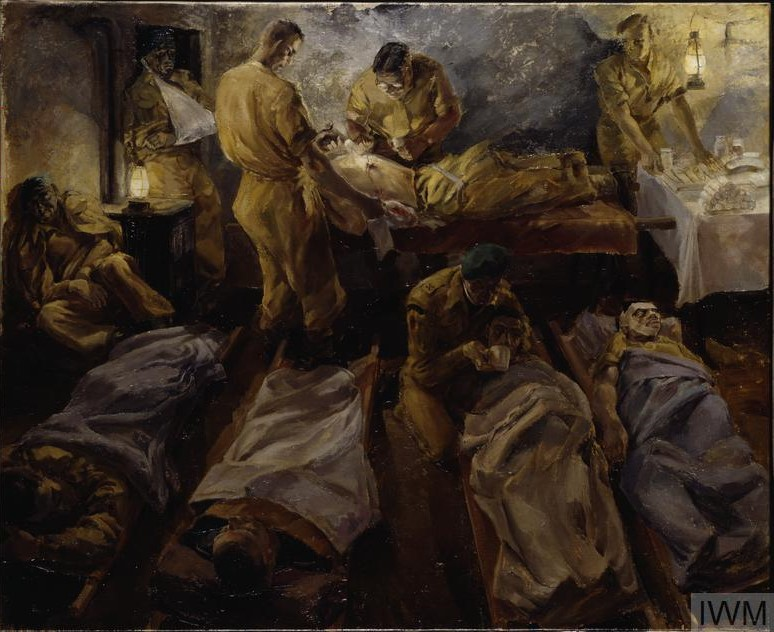
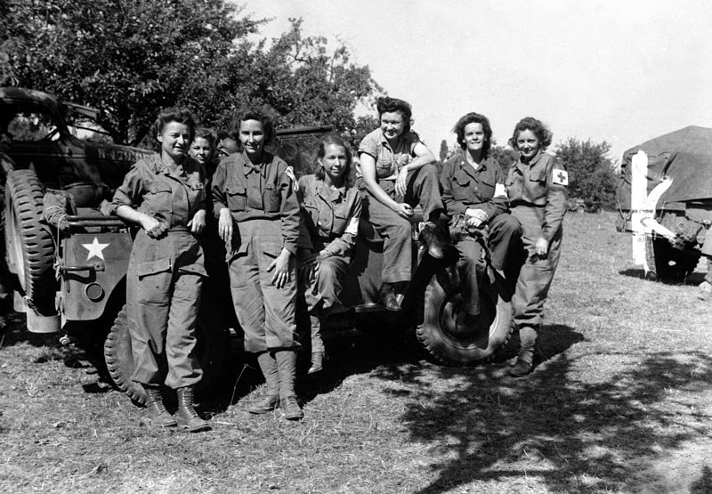

Regimental Aid Post

Scene in a Regimental Aid Post: In a filthy cellar at Sallenelles, France, after an action 1944, by Leslie Cole.
Medical Camps
At a Field-Dressing Station
Medical Bag
Army Medic Bag
Medical Kit
Individual First Aid Dressing (Two gauze bandages (4"x84"), two gauze compresses (3 ½" x 3 ½ "), two safety pins)
Army Nurse Corps

Nurses of a field hospital who arrived in France via England and Egypt after three years service. August 12, 1944. Parker. (Army Surgeon General)
Medical Staff